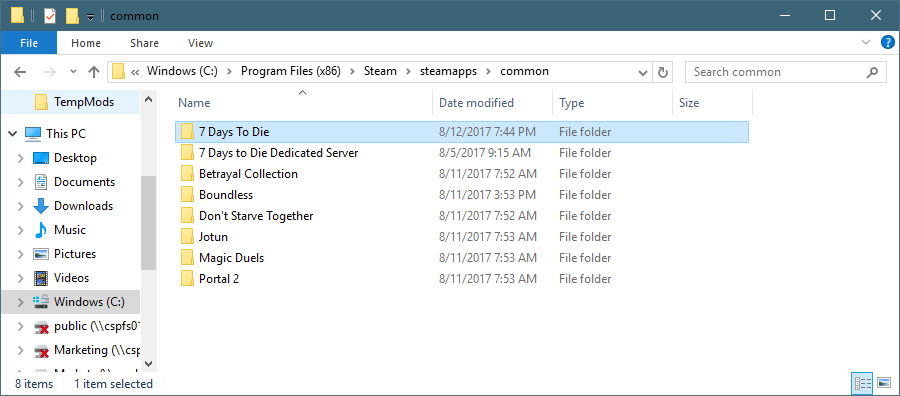
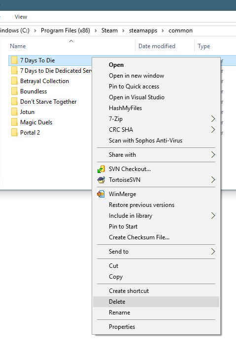
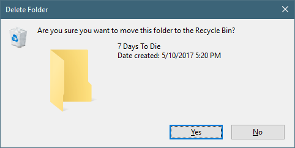
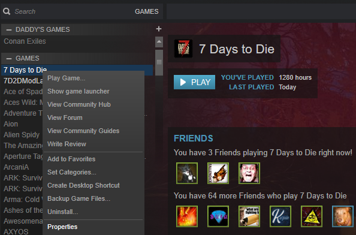
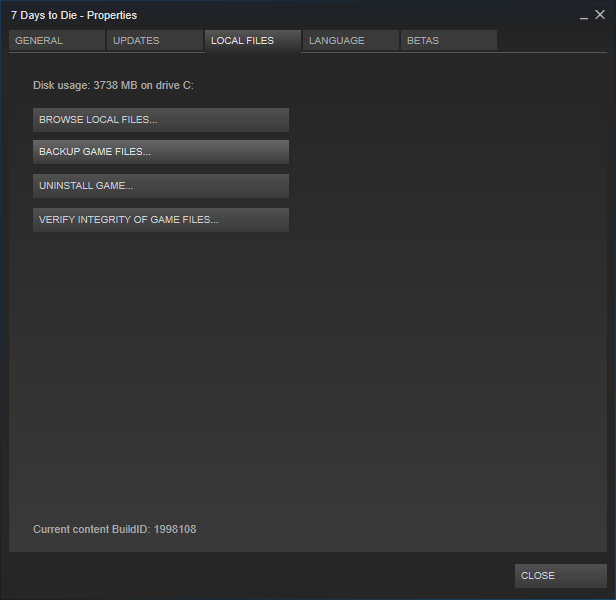
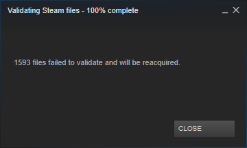

Using Windows explorer, navigate to your Steam Folder, which is by default "C:\Program Files (x86)\Steam\steamapps\common"

Right Click on the "7 Days To Die" folder, and select Delete

Confirm that you want to delete the "7 Days To Die" folder

In Steam, right click on the "7 Days to Die", and click on Properties

Click on the "Local Files" tab

And click on "VERIFY INTEGRITY OF GAME FILES"

This will download a fresh install of 7 Days to Die of the latest stable release.
Created with the Personal Edition of HelpNDoc: Easy EBook and documentation generator